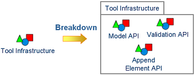

Activity: Defining produced assets
Purpose
The purpose of this activity is to:
- Determine the list of assets to be produced by the production process.
- Describe the content of each asset.
- Identify asset breakdown (abstraction level of assets).
- Identify the relationships between assets.
- Check the assets are consistent each others.
- Check the assets are consistent with activities of the production process.

Figure 1. Example of asset breakdown representation
Asset content and asset relationships (composition, association) can be better formalized with a model.
The interest to define assets is to:
- Clarify the assets implied in the software development.
- Clarify the asset relationships.
- Scope the assets that are generated or manually produced.
- Foreshadow the need or usage of factory components.
This activity is led in parallel of the production process definition activity.
Inputs
Inputs of this activity are:
- Assets already defined.
- Asset architecture.
- Activities of the production process.
Outputs
Outputs of this activity are:
- New or updated assets.
- Asset architecture.
Work Guidelines
Asset content description and asset relationships must:
- Clarify the nature of each asset (e.g., code, framework, tool, language).
- Clarify the structure of each asset.
- Clarify the asset lifecycle.
- Be consistent with the asset architecture (structural, dynamic, synchronization).